Farmacéutica
Goteros, jaraberos y pastilleros hechos en cuarto limpio.
Envases para medicamentos oftálmicos, óticos, nasales, jarabes y sólidos orales. Los fabricamos en cuartos limpios ISO 7 e ISO 8 con resinas aprobadas por la FDA.
Conoce más✓Cuarto limpio ISO 7 · en especificación

Gotero 15 ml
Roscado inviolable · PEBD

Inserto 15 mm
Punta redonda · goteo controlado
◎Drug Master File